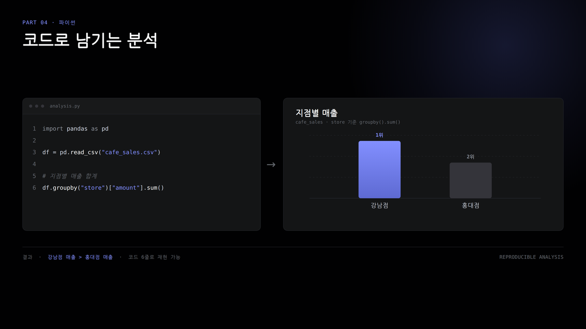

Colab과 파이썬 기초
브라우저에서 코드를 실행하고 작은 표를 필터링한다.
학습 목표
- Colab 노트북을 만들고 코드 셀을 실행한다.
- 변수, 자료형, 리스트, 딕셔너리를 구분한다.
- for 반복문으로 합계와 평균을 계산한다.
- if 조건문으로 평일 행만 고른다.
엑셀에서 파이썬으로 이동

엑셀에서 하던 일을 파이썬으로 옮긴다고 생각해 봅니다. 개발자가 쓰는 어려운 도구로 넘어간다기보다, 엑셀에서 익숙했던 셀, 열, 행, 필터, 아래로 채우기 감각에 새 이름을 붙이는 과정입니다.
Colab은 브라우저에서 쓰는 파이썬 작업장입니다. 엑셀 파일을 열면 셀이 보이듯, Colab 노트북을 열면 코드를 적는 칸이 보입니다. 그 칸에 코드를 쓰고 실행하면 결과가 바로 아래에 나타납니다.
오늘은 큰 데이터 파일을 열지 않고, 120000, 98000, 135000 같은 작은 매출 숫자로 연습합니다. 숫자를 작게 놓고 문법을 먼저 익히면, 다음에 표가 커져도 코드가 덜 낯설게 보입니다.
엑셀 감각을 문법으로 바꾼다
| 엑셀 | 파이썬 | 뜻 |
|---|---|---|
| 셀 주소 | 변수 | 값 이름 |
| 한 열 | 리스트 | 여러 값 |
| 한 행 | 딕셔너리 | 이름 붙은 값 |
| 필터 | if | 조건 선택 |
| 아래로 채우기 | for | 반복 적용 |
이 표는 엑셀에서 이미 알고 있는 감각을 파이썬 단어로 바꿔 보는 표입니다. 왼쪽은 엑셀에서 하던 일, 가운데는 파이썬에서 쓰는 이름, 오른쪽은 그 뜻입니다.
셀 주소는 파이썬에서 변수와 비슷합니다. 엑셀에서 B2가 어떤 값을 가리키듯, 파이썬에서는 today_sales 같은 이름이 170000이라는 값을 가리킵니다.
한 열처럼 값이 여러 개 쌓이면 리스트로 봅니다. 한 행처럼 요일과 매출처럼 이름표가 붙은 값들이 모이면 딕셔너리로 봅니다. 엑셀 필터는 if 조건문과 닮았고, 아래로 채우기는 for 반복문과 닮았습니다.
처음부터 문법 이름을 모두 외우려고 하지 않아도 됩니다. ‘이건 엑셀의 무엇과 비슷하지?’ 하고 연결해서 보면, 파이썬 코드가 표 작업의 다른 표현처럼 보이기 시작합니다.
Colab은 코드 셀로 작업한다
코드 셀을 실행하면 결과가 바로 아래에 나타난다. 위에서 만든 변수는 아래 셀에서 다시 쓴다.
- Shift + Enter로 실행한다.
- 런타임이 꺼지면 변수는 사라진다.
- 필요한 셀은 위에서 아래로 실행한다.
Colab에서는 코드를 한꺼번에 긴 문서처럼 실행하기보다, 코드 셀이라는 작은 칸 단위로 실행합니다. 코드 셀에 print나 계산식을 쓰고 Shift + Enter를 누르면, 그 셀의 결과가 바로 아래에 나옵니다.
여기서 중요한 습관은 위에서 아래로 실행하는 것입니다. 위 셀에서 today_sales라는 변수를 만들었다면, 아래 셀에서는 그 이름을 다시 쓸 수 있습니다. 하지만 위 셀을 실행하지 않았다면 아래 셀은 today_sales가 무엇인지 모릅니다.
런타임은 임시 작업 책상처럼 생각하면 됩니다. 노트북 파일은 남아 있어도, 작업 책상을 치우면 그 위에 올려 두었던 변수들은 사라집니다. 그래서 Colab을 다시 열었거나 런타임이 꺼졌다면, 필요한 셀을 위에서부터 다시 실행해 보세요.
변수는 값에 이름을 붙인다
이 그림은 엑셀의 셀 주소 감각을 파이썬 변수 감각으로 바꿔 보여줍니다. 왼쪽에서는 B2라는 주소에 170000이 들어 있습니다. 엑셀에서는 B2라고 부르면 그 칸의 값을 다시 가져올 수 있죠.
오른쪽에서는 같은 170000에 today_sales라는 이름을 붙였습니다. 파이썬에서는 B2 같은 위치보다, 사람이 읽기 쉬운 이름을 더 자주 씁니다. today_sales라고 적으면 ‘오늘 매출’이라는 뜻이 바로 보입니다.
등호를 볼 때는 수학처럼 ‘같다’가 아니라 ‘오른쪽 값을 왼쪽 이름에 담는다’고 읽어 보세요. today_sales = 170000은 170000이라는 값을 today_sales라는 이름표가 붙은 상자에 넣는 모습입니다.
자료형은 계산 가능성을 정한다
| 값 | 자료형 | 뜻 |
|---|---|---|
| 강남점 | str | 글자 |
| 170000 | int | 정수 |
| 0.1 | float | 소수 |
| False | bool | 참거짓 |
계산이 안 되면 값이 숫자인지 먼저 확인한다.
자료형은 값의 종류입니다. 엑셀에서도 숫자처럼 보이지만 실제로는 글자인 값이 있으면 합계가 이상해질 때가 있습니다. 파이썬도 마찬가지로 값의 종류가 맞아야 계산이 됩니다.
강남점은 글자라서 str입니다. 170000은 소수점 없는 숫자라서 int입니다. 0.1처럼 소수점이 있으면 float이고, False처럼 참과 거짓을 나타내는 값은 bool입니다.
계산이 안 될 때는 코드를 크게 고치기 전에 값의 종류부터 확인해 보세요. 저울에 물건을 올리듯, type으로 값을 올려 보면 파이썬이 이 값을 글자로 보는지 숫자로 보는지 확인할 수 있습니다.
평일 매출 5개를 비교한다
이 막대그래프는 월요일부터 금요일까지 매출 5개를 나란히 비교한 그림입니다. 아래의 월, 화, 수, 목, 금은 요일이고, 막대가 길수록 그날 매출이 더 크다는 뜻입니다.
먼저 가장 긴 막대를 찾아보세요. 목요일 막대가 170000으로 가장 큽니다. 그다음 금요일은 155000, 수요일은 135000이고, 화요일은 98000으로 가장 작습니다.
평일 매출 5개를 비교한다이어서
그래프를 볼 때는 숫자를 모두 외우기보다 높낮이부터 보면 됩니다. 키를 재듯 막대의 높이를 비교하면, 평일 중에서는 목요일 매출이 제일 높고 화요일 매출이 제일 낮다는 흐름이 바로 보입니다.
이 5개 값은 뒤에서 반복문으로 하나씩 더할 재료가 됩니다. 그래프는 눈으로 비교하는 도구이고, 반복문은 같은 값을 코드로 계산하는 도구라고 보면 됩니다.
반복문은 합계를 만든다
이 그림은 반복문이 매출 5개를 어떻게 합계와 평균으로 바꾸는지 보여줍니다. 왼쪽의 입력에는 매출 개수 5와 초기 합계 0이 있습니다. 처음에는 아직 아무것도 더하지 않았으니 합계가 0에서 시작합니다.
for 반복문은 매출 값을 하나씩 꺼냅니다. 120000을 더하고, 98000을 더하고, 135000을 더하고, 170000을 더하고, 155000을 더합니다. 저금통에 동전을 하나씩 넣듯이 total_sales라는 합계 변수에 계속 쌓는 방식입니다.
반복이 끝나면 오른쪽처럼 매출 합계는 678000이 됩니다. 평균은 합계 678000을 개수 5로 나눈 값이라서 135600.0입니다.
엑셀에서는 SUM이나 AVERAGE가 이 일을 한 번에 해 줍니다. 여기서는 그 안에서 벌어지는 일을 손으로 한 줄씩 풀어 본다고 생각하면 됩니다.
함수는 절차의 이름이다
average는 반복문으로 더하고 개수로 나누는 절차에 이름을 붙인 예다.
- 같은 계산을 다시 사용할 수 있다.
- 출력은 135600.0이다.
- pandas의 mean과 연결된다.
함수는 여러 줄짜리 일을 하나의 이름으로 묶어 둔 것입니다. average라는 이름을 붙여 두면, 매번 합계를 만들고 개수로 나누는 과정을 다시 길게 쓰지 않아도 됩니다.
average 함수 안에서는 먼저 total을 0으로 만들고, numbers 안의 값을 하나씩 더한 다음, 마지막에 total을 값의 개수로 나눕니다. 이 수업의 매출 5개를 넣으면 결과는 135600.0입니다.
엑셀에서 AVERAGE라는 이름을 부르면 평균 계산이 실행되듯, 파이썬에서도 함수 이름을 부르면 정해 둔 절차가 실행됩니다. 다음 차시에서 만날 mean도 평균을 구해 주는 이름이라고 보면 됩니다.
작은 표에는 주말도 포함된다
이 막대그래프는 월요일부터 일요일까지 7일 매출을 모두 보여줍니다. 앞의 그래프가 평일 5개만 봤다면, 여기서는 토요일과 일요일까지 들어간 작은 표 전체를 보는 것입니다.
막대를 보면 토요일은 210000, 일요일은 190000으로 높습니다. 그런데 오늘 미션은 평일 매출을 계산하는 일이기 때문에, 매출이 크더라도 토요일과 일요일은 계산에서 빼야 합니다.
작은 표에는 주말도 포함된다이어서
그래프에서 강조된 토요일과 일요일을 ‘제외 대상’으로 보면 됩니다. 사전에서 필요한 단어만 찾듯, 표에서도 월, 화, 수, 목, 금에 해당하는 행만 남겨야 평일 계산이 됩니다.
그래서 이 그림의 뜻은 ‘가장 큰 값을 무조건 쓰자’가 아닙니다. 분석 질문이 평일이라면, 조건에 맞지 않는 주말 행을 먼저 걸러낸 뒤 합계와 평균을 계산해야 한다는 뜻입니다.
조건문은 행을 걸러낸다
이 그림은 조건문을 적용하기 전과 후의 표가 어떻게 달라지는지 보여줍니다. 왼쪽에는 월요일부터 일요일까지 7행이 모두 들어 있습니다. 아직 조건이 없어서 주말도 그대로 포함되어 있습니다.
오른쪽은 in weekday_names라는 조건을 적용한 뒤입니다. weekday_names는 월, 화, 수, 목, 금이 들어 있는 평일 이름 목록이라고 보면 됩니다. in은 현재 요일이 그 목록 안에 있는지 확인하는 말입니다.
조건을 통과한 행만 남기면 행수는 7에서 5로 줄어듭니다. 남는 요일도 월~금뿐입니다. 엑셀 필터에서 평일만 체크하고 토요일과 일요일 체크를 끄는 장면과 같습니다.
이 구조가 다음에 배울 pandas 필터의 바탕입니다. 지금은 행을 하나씩 보며 if로 고르지만, 나중에는 표 전체에 같은 조건을 한 번에 적용하게 됩니다.
오늘의 미션
정리
- Colab에서는 코드 셀을 위에서 아래로 실행한다.
- 리스트는 열, 딕셔너리는 행처럼 생각한다.
- for는 누적 계산, if는 필터의 출발점이다.
- 함수는 자주 쓰는 절차에 붙인 이름이다.